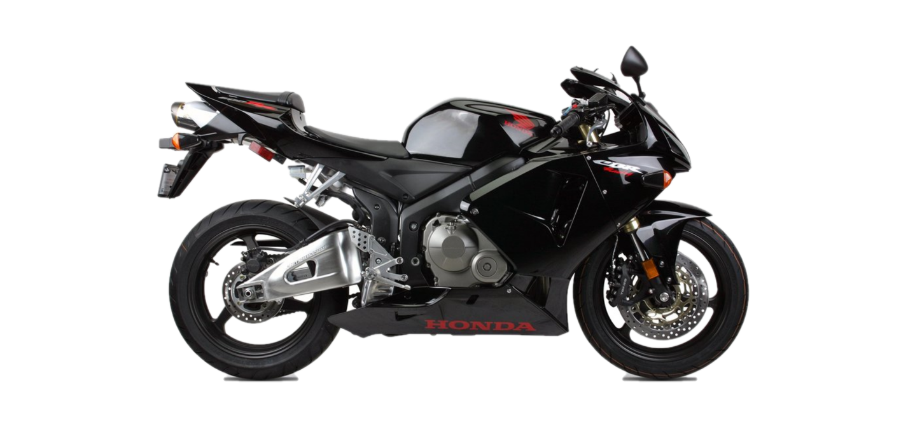
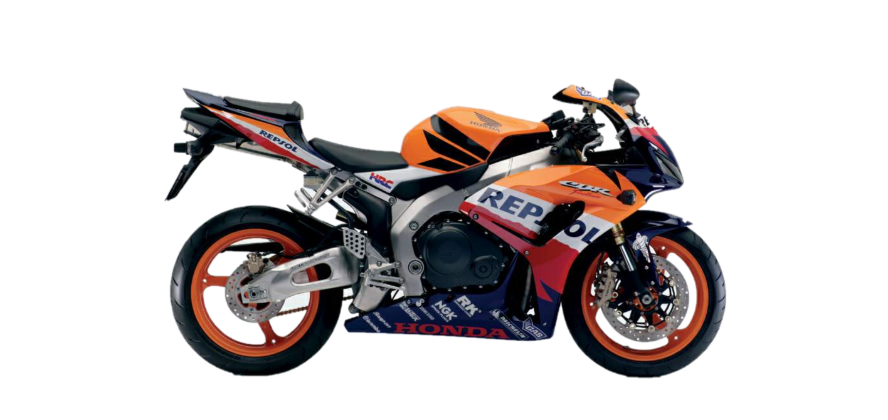
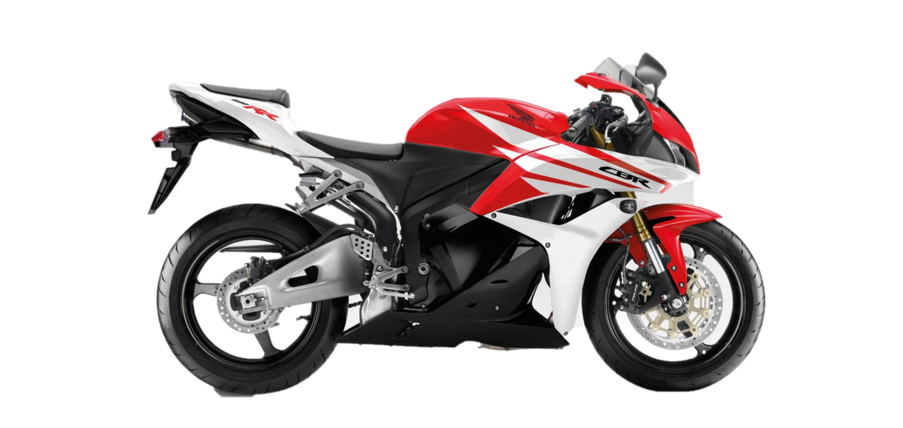
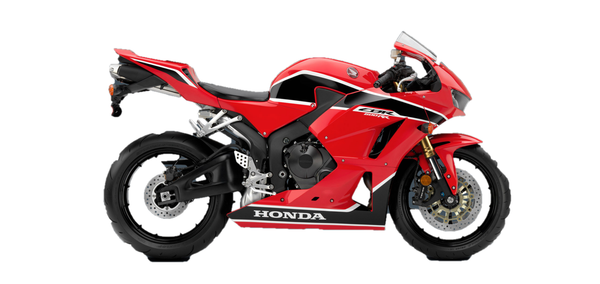

Model History
2003-2004
The 2003 CBR600RR was based on technologies used in the Honda RC211V MotoGP bike, and was given a similar appearance. It was the first Honda to use Unit Pro-Link rear suspension, a variant on the single rear shock absorber with the upper mount connected to the rear swingarm subframe to help isolate undesirable forces transmitted to the steering head. It also was the first to use Honda's Dual Stage Fuel Injection (PGM-DSFI): both were taken directly from the RC211V. Honda said that the use of its new 'Hollow Fine Die Cast' frame technology, in which sand casting molds were given a ceramic interior coating, made it possible to reduce the thickness of the five-piece aluminum frame from 3.5 mm to 2.5 mm.
2005-2006
In 2005, the CBR600RR received a major revision with new bodywork, fully adjustable inverted front forks, disc brakes with radial-mounted four-piston calipers, and a new aluminum frame, swingarm and rear shock. The midrange power was also increased. These changes along with additional refinements to the engine and exhaust system brought CBR600RR's wet weight down by 10.0 kg (22 lb), and dry weight by 4.1 kg (9 lb).
2007-2008
On September 6, 2006, Honda revealed an all new CBR600RR for the 2007 model year. The CBR600's most radical redesign since the introduction of the RR in 2003 is highlighted by a whole new engine, frame, and bodywork that results in a smaller, lighter, more-powerful CBR600RR with a class-leading power-to-weight ratio and unparalleled performance. Weight was the primary focus of the redesign. The result was a 9.1 kg (20 lb) reduction in dry weight over the 2006 model, from a claimed 163.7 kg (361 lb) to 154.7 kg (341 lb). Tested weights without fuel were 182–182 kg (401–402 lb). In redesigning the CBR600RR for lighter weight and increased performance, Honda's engineers started with the engine. The completely new engine was smaller and lighter than its predecessor, the designers having used careful positioning of all internal components to achieve reductions in the motor's length, width, and height, as well as reducing weight by 2 kg (4.4 lb) compared to the 2006 model's powerplant. Horsepower increased to about 105 hp (78 kW) measured in independent tests. The frame was lighter and more compact than the 2006 CBR600RR. The handling of the new bike was sharpened by its 22 mm (0.87 in) shorter wheelbase, as well as by the designer's focus on strict mass centralization. Despite the shorter wheelbase, the 2007 model's swingarm was 5 mm (0.20 in) longer than that of the 2006, made possible by the more compact dimensions of the new bike's engine.
2009-2012
On September 5, 2008, Honda introduced a revised CBR600RR for the 2009 model year. Combined ABS became available as an option under the model (CBR600RA). Other changes included updates to the engine such as changes to its pistons, cylinder head and exhaust that Honda claims will increase torque delivery between 8,000–12,000 rpm with a 3.5% increase in torque at 10,000 rpm. The CBR600RR's engine also received a new high resistance valve lifter and a popup valve system inherited from the CBR1000RR. It looks were the same as last year apart from some extra mouldings added to the fairing mid-sections that enhance stability and reduce noise emission levels by now totally enclosing the clutch and gearbox. Although all of these changes involved the addition of some materials, the overall weight of the 2009 CBR600RR remained the same as the 2008 model. This was achieved through weight savings in the engine, exhaust, and the chassis.
2013-2017
The 2013 CBR600RR includes new 12-spoke wheels, revised ECU settings, and a fine-tuned ram-air system to increase torque. It also gets a new Showa "Big Piston Fork" and retuned rear shock in a new bodywork. The model continued unchanged through the 2017 model year. Motorcycle.com said that while the CBR600RR's performance specifications, particularly the horsepower, were "pretty tame even for the middleweight class", and it lacked the newest technologies like cornering ABS, traction control and mobile apps, it remained a comfortable and good handling sport bike for the street.
Racing
As of 2015, in the Supersport World Championship, the CBR600 won eight out of twelve titles since its introduction in 2003, and ten manufacturers' crowns since 2003. Michael Dunlop holds the supersport lap record at the Isle of Man TT on a CBR600RR. In the 2010 season, with the introduction of the four-stroke Moto2 class in the MotoGP World Championship, the engines for the class were based on the CBR600RR, with a maximum power of 150 bhp (110 kW). Starting in the 2019 season, the Honda engines were replaced by a Triumph 765 cc (46.7 cu in) straight-three engine.
Awards
- 2003 Best Sportbike, Motorcyclist
- 2007 Supersport Shootout Winner, Motorcycle-USA.com
- 2008 Middleweight Smackdown Winner, Sport Rider
- 2009 Best Sportsbike under 600cc: Honda CBR600RR C-ABS, Motor Cycle News
Specifications
-
Engine
- Type: 599 cc (36.6 cu in) liquid-cooled inline four-cylinder
- Bore x Stroke: 67.0 mm × 42.5 mm (2.64 in × 1.67 in)
- Compression: 12.2:1
- Power: 75.0 kW (100.6 hp) @ 12,500 rpm
- Torque: 60.7 N⋅m (44.8 lb⋅ft) @ 10,600 rpm
-
Drivetrain
- Suspension: 41 mm (1.6 in) inverted Big Piston Fork with spring preload, rebound and compression damping adjustability
- Front Tyre: 120/70ZR-17 radial
- Rear Tyre: 180/55ZR-17 radial
- Front Brakes: Dual radial-mounted Mono-block four-piston calipers with 310.0 mm (12.20 in) discs Honda electronic Combined ABS
- Rear Brakes: Single piston caliper with 220.0 mm (8.66 in) disc, electronic combined ABS
-
Dimensions
- Rake: 23.9°
- Trail: 97.7 mm (3.85 in)
- wheelbase: 1,370 mm (53.9 in)
- Seat height: 820 mm (32.3 in)
- Weight: 189 kg (417 lb)
-
Performance
- 0 to 60 mph (0 to 97 km/h): 2.9 seconds (2013)
- 0 to 1⁄4 mi (0.00 to 0.40 km): 10.96 @ 205.67 km/h (127.80 mph)